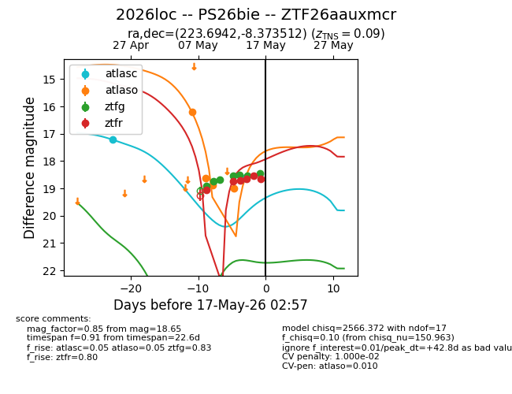
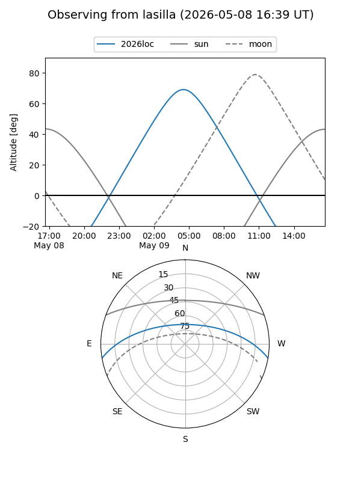
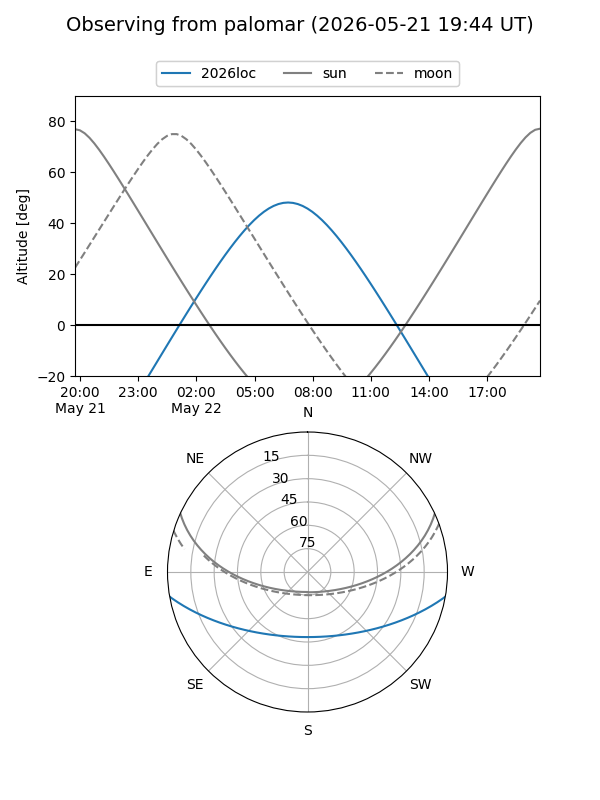
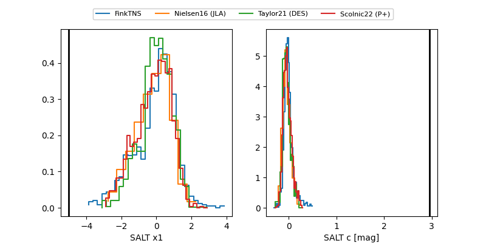

2026loc
Target 2026loc at 2026-05-17 02:59
Aliases and brokers:
FINK: link
Lasair: link
ALeRCE: link
TNS: link
YSE: link
alt names
ZTF26aauxmcr (ztf,fink_ztf)
2026loc (tns,yse)
PS26bie (panstarrs)
Coordinates:
equatorial (ra, dec) = 223.6942,-8.37351
equatorial (HMS+DMS) = 14:54:46.61,-08:22:24.64
galactic (l, b) = (347.3801,+43.60149)
Flags:
confirmed ia
likely cv
Photometry:
last atlasc=18.64, atlaso=19.00, ztfg=18.46, ztfr=18.65
2 atlasc, 4 atlaso, 7 ztfg, 6 ztfr detections
Lightcurve

Visibility


Additional plots
